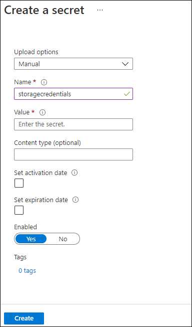

Lab 2: Configure secrets and identities
Task 1: Configure a system-assigned managed service identity
On the Azure portal's navigation pane, select the Resource groups link.
On the Resource groups blade, select the ConfidentialStack resource group.
On the ConfidentialStack blade, select the securefunc[yourname] function app.
Note: There will be two resources, a function app and application insights resource, with the same name. Make sure you select the function app resource.
On the Function App blade, select the Identity option from the Settings section.
On the Identity pane, on the System assigned tab, set the Status to On, and then select Save.
Select Yes to confirm the setting.
Note: Wait for the system-assigned managed identity to be created before you move forward with this lab.
Task 2: Create a Key Vault secret
On the Azure portal's navigation pane, select the Resource groups link.
On the Resource groups blade, select the ConfidentialStack resource group.
On the ConfidentialStack blade, select the securevault[yourname] key vault.
On the Key Vault blade, select the Secrets link in the Objects section.
On the Secrets pane, select + Generate/Import.
On the Create a secret blade, perform the following actions, and then select Create:
| Setting | Action | | -- | -- | | Upload options drop-down list | Select Manual | | Name text box | Enter storagecredentials | | Value text box | Enter the storage account connection string that you recorded previously in this lab | | Content type text box | Leave blank | | Set activation date check box | Not selected | | Set expiration date check box | Not selected | | Enabled option | Select Yes |
The following screenshot displays the configured settings on the Create a secret blade.

Note: Wait for the secret to be created before you move forward with this lab.
Return to the Secrets pane, and then select the storagecredentials item in the list.
On the Versions pane, select the latest version of the storagecredentials secret.
On the Secret Version pane, perform the following actions:
Select Show secret value to find the value of the secret.
Record the value of the Secret Identifier text box because you'll use this later in the lab.
Note: You're recording the value of the Secret Identifier text box, not the Secret Value text box.
Task 3: Configure a Key Vault access policy
On the Azure portal's navigation pane, select the Resource groups link.
On the Resource groups blade, select the ConfidentialStack resource group.
On the ConfidentialStack blade, select the securevault[yourname] key vault.
On the Key vault blade, select the Access policies link in the Overview section.
On the Access policies pane, select + Create.
On the Create an access policy blade, select 1 Permissons section and make the following selections:
| Setting | Action | | -- | -- | | Configure from a template drop-down list | Leave blank | | Key permissions checkboxes | 0 selected | | Secret permissions checkboxes | Select the GET permission | | Certificate permissions checkboxes | 0 selected |
Select the 2 Principal section and make the following selections:
| Setting | Action | | -- | -- | | Select principal link | Find and then select the service principal named securefunc[yourname]. The system-assigned managed identity you created previously in this lab will have the same name as the Azure Function resource |
Select 4 Review + create and select Create.
Note: Wait for your changes to the access policies to save before you continue with this lab.
Task 4: Create a Key Vault-derived application setting
On the Azure portal's navigation pane, select the Resource groups link.
On the Resource groups blade, select the ConfidentialStack resource group.
On the ConfidentialStack blade, select the securefunc[yourname] function app.
On the Function App blade, select the Configuration option from the Settings section.
On the Configuration pane, on the Application settings tab, select New application setting.
In the Add/Edit application setting pop-up window, in the Name text box, enter StorageConnectionString.
In the Value text box, construct a value by using the following syntax:
@Microsoft.KeyVault(SecretUri=<Secret Identifier>), where the<Secret Identifier>placeholder represents the secret identifier you recorded earlier in this exercise.Note: For example, if your secret identifier is
https://securevaultstudent.vault.azure.net/secrets/storagecredentials/17b41386df3e4191b92f089f5efb4cbf, the resulting value would be@Microsoft.KeyVault(SecretUri=https://securevaultstudent.vault.azure.net/secrets/storagecredentials/17b41386df3e4191b92f089f5efb4cbf).Leave the deployment slot setting check box set to its default value (not selected), and then select OK to close the pop-up window and to return to the Configuration section.
Select Save to save your settings, and then in the save Changes confirmation pop-up dialog box, select Continue.
Note: Wait for your application settings to save before you continue with the lab.
Review
In this exercise, you created a system-assigned managed service identity for your function app, and then gave that identity the appropriate permissions to get the value of a secret in your key vault. Finally, you created a secret that you referenced within your function app's configuration settings.